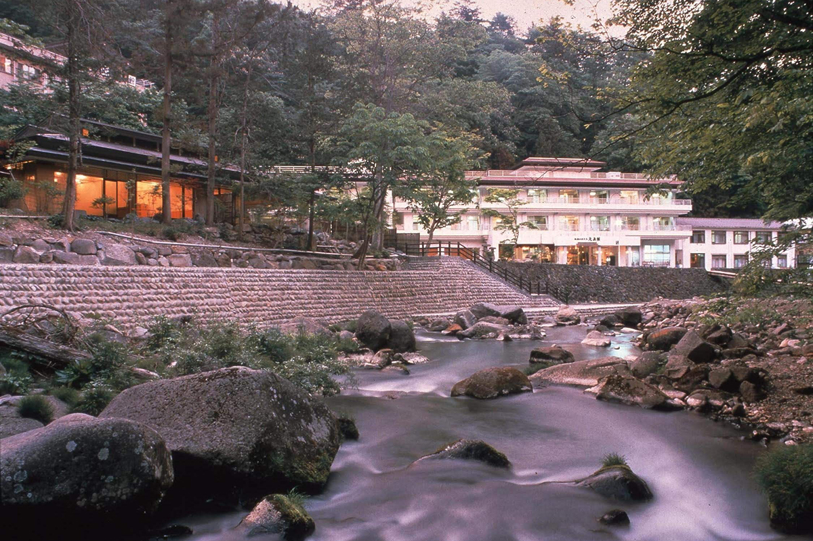
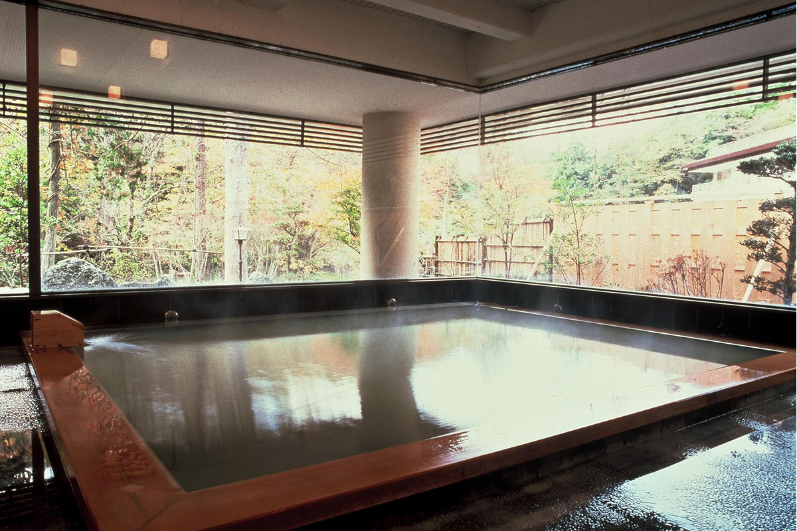
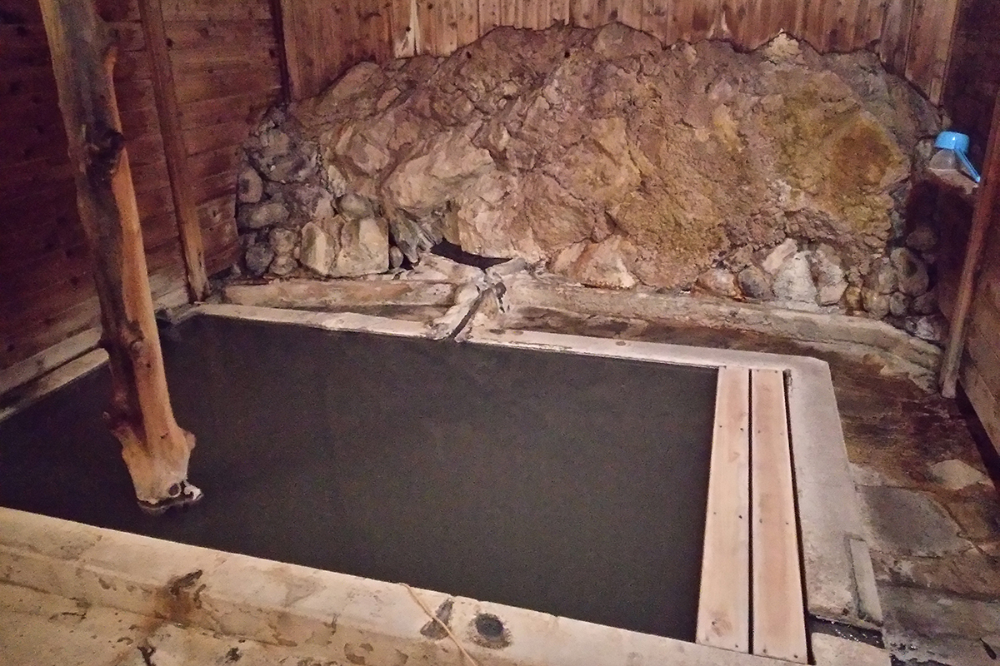
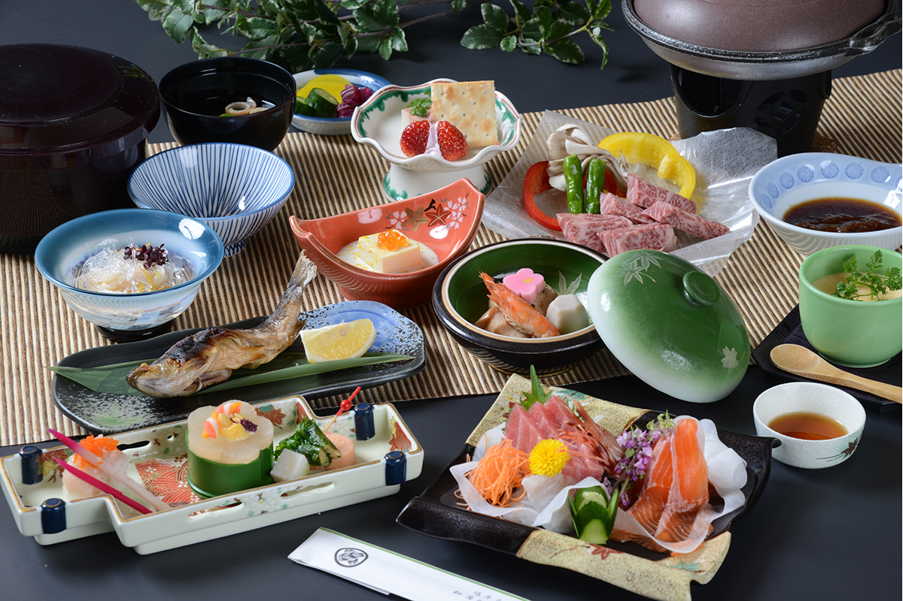

Префектура Тотиги · Насу-Сиобара · онсэн
Онсэн Оку-Сиобара: мутная вода, которая меняет цвет день ото дня

Профессор, который больше сорока лет изучает японские онсэны, называет Оку-Сиобару самым сильным местом для лечения водой во всей Японии. Здешние источники мутные, а в рёкане «Гэнсэнкан» вода в одной и той же ванне бывает то молочно-белой, то зелёной, то чёрной.
Онсэн
Самая глубокая часть Сиобары
Онсэн Сиобара лежит в горах на территории города Насу-Сиобара, на севере префектуры Тотиги. Дальше всех в горы уходят два его посёлка: Араю, над которым поднимаются клубы пара, и Мотою, с которого и началась Сиобара. Вместе их называют Оку-Сиобарой, то есть «дальней Сиобарой».
В Араю четыре гостиницы, в Мотою три. Почти везде вода сернистая и мутная, молочно-белая или чёрная. Она течёт в ванны прямо из источника и не ходит по кругу. По оценке профессора, это самый сильный тодзи-ба Японии, то есть место для тодзи, неспешного лечения водой.
В одном только Араю три общественные купальни: «Мудзина-но ю», «Тэра-но ю» и «Нака-но ю». Для любителей онсэнов это, по словам профессора, настоящий подарок.

Рёкан
«Гэнсэнкан»: три купальни у реки
Главная рекомендация профессора рёкан «Гэнсэнкан» в Мотою. Он стоит над ущельем реки Акагава, и купален здесь три, так что не надоест и за две-три ночи. Самое удивительное в том, что вода меняет цвет день ото дня: бывает белой и мутной, зелёной, чёрной. Однажды профессор увидел, как вода в большой купальне «Такао-но ю» у самой реки стала чёрной, и признаётся, что был тронут.
Температура воды и устройство большой ванны «Такао-но ю», по его словам, подходят ему больше всего. Вода здесь к тому же «действенная», с сильной восстановительной способностью. При купальне есть «кэйрю-ротэмбуро», ванна под открытым небом у горного потока: лучше всего в ней сидеть в сезон красных клёнов и когда вокруг лежит снег.

Если говорить о воде в самой ванне, с купальней «Кантан-но ю» мало что сравнится: источник бьёт прямо из скалы. Профессор ценит эту воду за редкую антиокислительную силу. «Кантан-но ю» известна как источник для желудка и кишечника, и говорят, что у некоторых гостей, приезжавших лечиться, зажила язва желудка. Утреннюю рисовую кашу в рёкане варят на воде этого же источника.
Третья купальня, «Такара-но ю», наполнена молочно-белой сернистой водой, которая особенно помогает при диабете и женских болезнях. Источник работает как гейзер: вода то льётся из трубы, то затихает, и такое встречается редко. В коридоре даже устроено место, где мутную воду можно попить. К 2024 году в рёкане появились просторные номера, где можно остановиться вместе с домашним питомцем.

В 2024 году ночь с завтраком и ужином стоила от 9000 иен с налогом и сервисом. Купание без ночёвки в «Такао-но ю» стоило 800 иен для взрослых и 400 иен для детей. Для гостей есть кухня, прачечная и Wi-Fi. Вода сернистая, хлоридно-гидрокарбонатная натриевая, с сероводородом. На выходе из земли у неё около 48–57 °C, и в ванны она идёт прямо из источника.
«Гэнсэнкан»
- Адрес
- префектура Тотиги, Насу-Сиобара, Юмото-Сиобара, 101
- Телефон
- +81 287-32-3155
- Цены / Вход
- с завтраком и ужином от 9000 иен с налогом и сервисом; купание без ночёвки (в «Такао-но ю») 800 иен для взрослых, 400 иен для детей
- Заезд / выезд
- 15:00 / 10:00